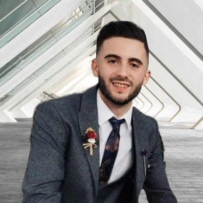
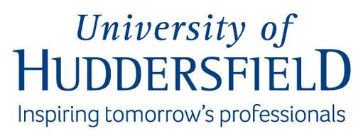
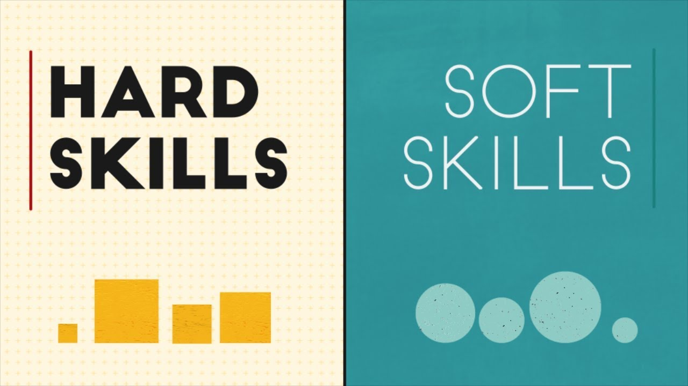

Bienvenue chez Remzi TOSUN 👋🏼

Mon nom est Remzi Tosun. Je suis actuellement étudiant en Master 1 du programme grande école à Kedge Business School en majeur Operation Management.
Je suis quelqu’un de rigoureux, appliqué et ambitieux. J’ai appris à endosser un cadre professionnel grâce aux différentes expériences dont j’ai eu la chance d’effectuer auparavant.
Voici le lien afin d'accéder au site de Kedge Business Shcool pour en savoir plus sur mon parcours. 👨🏼🎓
📚 En savoir plus sur Kedge 🏢
Informations et coordonnées 📞
22 ans
Permis B et A - Véhicule personnel
remzi.tosun@kedgebs.com
07.86.13.95.80
Mes expériences professionnelles
Stagiaire Supply Chain (Demand planning & LCM) - Obernai
Hager Group 01/2022 - 07/2022
Agent de production en montage de coffret électrique - Obernai
Hager Group 06/2021 - 08/2021
Contrôleur qualité dans la logistique - Strasbourg
Rhenus logistics 06/2019 - 09/2019
Gestionnaire de stock - Offenbourg
Printus 05/2018 - 09/2018
Vendeur de libre service - Strasbourg
Auchan 01/2018 - 05/2018
Mes formations 👨🏼🎓
Kedge Business School - Bordeaux Master 1 Programme Grande Ecole - 2021/23
(Supply chain; Achats; Business analytics; Finance; Stratégie...)
University of Huddersfield (Royaume-Uni) - Erasmus exchange semester - 2020/21
(International business; Business entreprise; Finance)
Université de Strasbourg - Licence en economie et gestion - 2018/21
Micro/macro-économie; Finance; Mathématiques; comptabilité...)
Lycée Jean Monnet Strasbourg - Baccalaureat ES - 2014/17


Mes expériences associatives
Je suis quelqu'un qui donne beaucoup d'importance aux expériences associatives. En effet, cela nous permet de se professionnaliser dans de nombreux domaines. Grâces à ces différentes expériences, j'ai eu la chance de travailler en équipe, de m'améliorer en gestion de projet ect..
French society - University of Huddersfield
09/2020 - 01/2021
📚 En savoir plus sur UoH 🏢
AESES, FSEG - Université de Strasbourg
09/2018 - 06/2020
📚 En savoir plus sur UoS 🏢
Langues, compétences et certificats 📋
MES LANGUES :
🇫🇷 Francais : Langue maternelle
🇬🇧 Anglais : Niveau B2/C1
🇩🇪 Allemand : Niveau B2
MES COMPETENCES :
Pack Office
Microsoft Power BI
Gestion de projet
Travail en équipe
Organisation

MES CERTIFICATS :
Certification PIX (01/2020)
Certification VBA (06/2020)